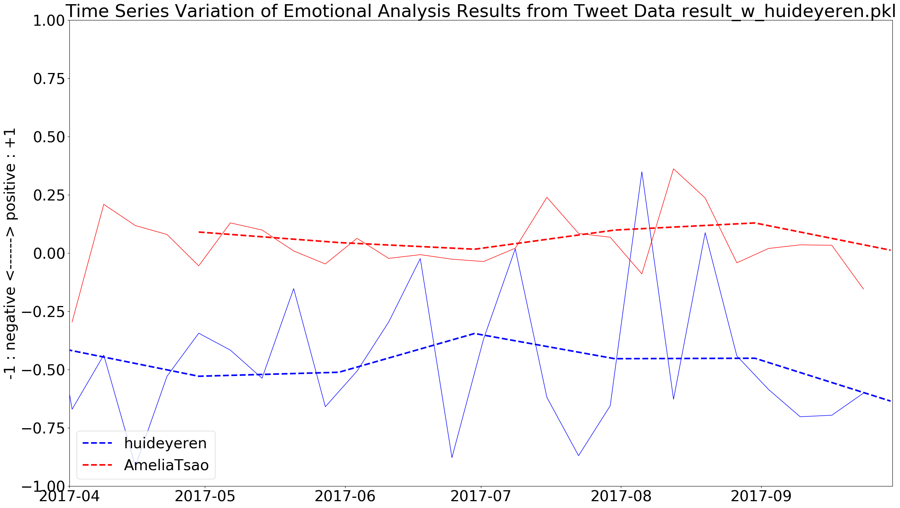

Twitterの感情分析始めました
Twitterの感情分析始めました
AI・機械学習等、新しいことに挑戦しようということと、
過去のオープンライフログ計画に関してできることは何かやろうということから
Twitterの発言のネガポジ分析をしてみました。
対象のアカウントは私の公開アカウントである @huideyeren と、トミーウォーカーのゲーム「ケルベロスブレイド」の自分のキャラクター用アカウントであるものの、最近中の人発言も多くなっている @AmeliaTsao の2つのアカウントから分析しました。
実行方法
ありがたいことに、やろうとしていたこととほぼ同じことをしていた事例があったため、その事例で使用しているコードのパラメーターを少々いじった上で実際に使用しています。
ソースコード
GitHubにあげてあるコードをご覧ください。
必要なライブラリはFastTextです。あと、Python3.6系がインストールされていることも前提です。
実行結果
このようなグラフになりました。

見方としては細い線が1週間ごとのネガティブとポジティブの平均値をグラフにしたもので、太い線が1ヶ月ごとの平均値をグラフにしたものです。
パブリックアカウント（@huideyeren）の分析
私のアカウント（青い線）では全般的にネガティブな思考をしていると考えられます。
その中で、1週間ごとのネガティブさ・ポジティブさが激しく変動しているため、調子がよいときと悪いときの差が大きいと推測されます。
今後を考える上で、心を安定させていくことが重要かもしれません。
ただ、このアカウントの発言は少ない方なので、結果的に少ないポストで結果が変動しやすくなっているのかと思われます。
なお、PyCon JPおよびRubyKaigiのカンファレンスとも重なりましたが、グラフを見る限りではネガティブなので、ツイートに感情が出ていたわけではないようです。これは意外な結果でした。
トミーウォーカー関連アカウント（@AmeliaTsao）の分析
おおむね中庸を保てているかと思いますが、発言の内容は当たり障りのない挨拶で推移していることもあるのか、分析にはあまり影響していないように思います。
分析するとポジティブの山が7月と8月に存在していることがわかります。この7月と8月の山が、トミーウオーカーのゲーム「サイキックハーツ」や「ケルベロスブレイド」の水着コンテストの時期とぴったり一致することがわかりました。
「サイキックハーツ」や「ケルベロスブレイド」ではイラストをイラストレーターさんに発注・リクエストして自分のキャラクター（男女は問わない）のイラストとして使用することができます。毎年夏にそれぞれのゲームで行われる水着コンテストでは、各個人がリクエストしたイラストに、人気投票のように投票をすることができます。その際にお互いが票を入れてくださいとお願いし合うこともあります。また、票を入れてくれたプレイヤーに対し感謝の言葉を述べることもよく行われるわけです。
結果として出力されたTSVファイルには、この投票のお願いや感謝の言葉などが軒並みポジティブな言葉と判断されていました。水着コンテストは7月にサイキックハーツで、8月にケルベロスブレイドで行われていたため、グラフにもその時期に山となっていたということがわかります。
にゃーんの意味
ところで、最近、「にゃーん」というツイートをする人をよく見かけます。日本人はつらいことをあまりいいたがらないでがまんする傾向にあると思いますが、以下のツイートはその様子を端的に言い表しています。
— 4869 (@sh4869sh) 2016年8月21日
（参考: http://sh4869.hatenablog.com/entry/2016/12/02/225248 ）
さらにそこから発展して、次のようなツイートをする人も現れています。
インターネッツで政治や社会や男女論について一言物申したくなったらまず深呼吸するんだ。そして「にゃーん」と呟く。いいな，にゃーんだ。物申したい気持ちが少し晴れただろう。護身の奥義だ。
— スドー (@stdaux) 2017年9月1日
ということで、つらいと思ったら私もよくにゃーんとつぶやいているのですが、これを先ほどの機械学習モデルに判断させてみるとどのような結果になるのでしょう？
結果は以下の通りでした。
2017-09-13 21:55:16+09:00 n -1.0 にゃーん
つまり、「にゃーん」は確実にネガティブな言葉とコンピューターは判断したことになります。
結論
わーい、きみはにゃーんの意味がわかるフレンズなんだね。すごーい！